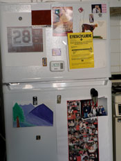
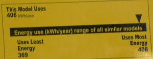

Capitalism in action!

MrLittlePants and I are delighted to have this new refrigerator. The antique we’ve struggled with for the past 20 months had a “manual defrost system,” also known as a “non-existant defrost system.” This meant that every few months, we had to engage in a half-day operation of emptying the fridge, scraping ice, and flooding the floor. That, or enjoy spoiled milk after three days, and about one cubic inch of space in the freezer.
So we were thrilled that our landlord was willing to buy us a new one. We’re still thrilled. But I was amused to see that it is just about the least energy efficient refrigerator you can buy. We would never buy anything less than mid-range, and would probably go for one that (like our A/C) was the most efficient available. It’s jarring that what we think of as “our” latest appliance is slovenly with electricity.

But of course we don’t own it, and the people who do don’t pay the electricity bills. It’s natural that they would buy the cheapest product available without regard to energy use.
This is the part where I say that capitalism is broken, and we should pass complicated laws discouraging low-efficiency appliances. But I don’t think that capitalism is broken, or that some kind of refrigerator CAFE is the answer. (Higher fuel taxes are better than weird regulations, etc.) This situation is just a reminder that renting is bad.
Renting is bad because it separates the buyer and the user. The government is doing the right thing in informing everyone of a product’s efficiency with simple yellow placards, but those efforts are wasted on our landlord’s eyes. He has no incentive to pay more for the energy-thrifty fridge. He might, to the contrary, assume that he’s getting a more reliable or cheaper one if less manufacturing effort went towards efficiency.
If it were the land owner paying the electricity bill, we would have righted things for this particular problem. But then what incentive would a renter have to set the A/C thermostat above 68º? Any separation between the user and the buyer, any renting, hampers the economic logic of waste reduction. And then we’ll all melt in ball of plasticy goo.
Isn’t that image the motivation you were waiting for to raise a million dollars for the down payment on a Manhattan townhouse?
related: The Preservation Paradox at Slate
Backtalk
you got a new fridge! i didn’t even know. it’s been too long since i’ve popped by…
The fridge, a bookshelf… and don’t even get me started on the baby’s room.
Add a comment